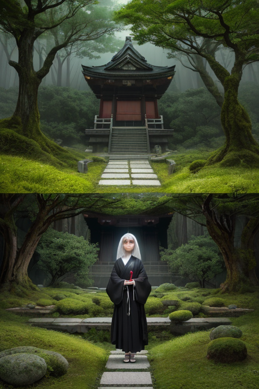
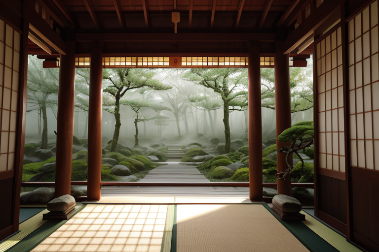
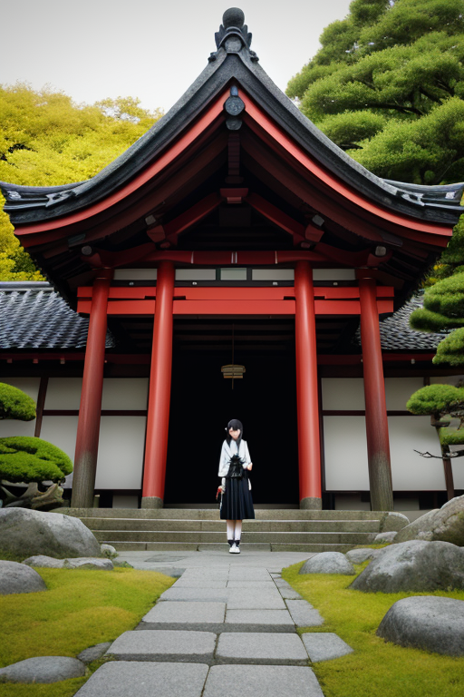
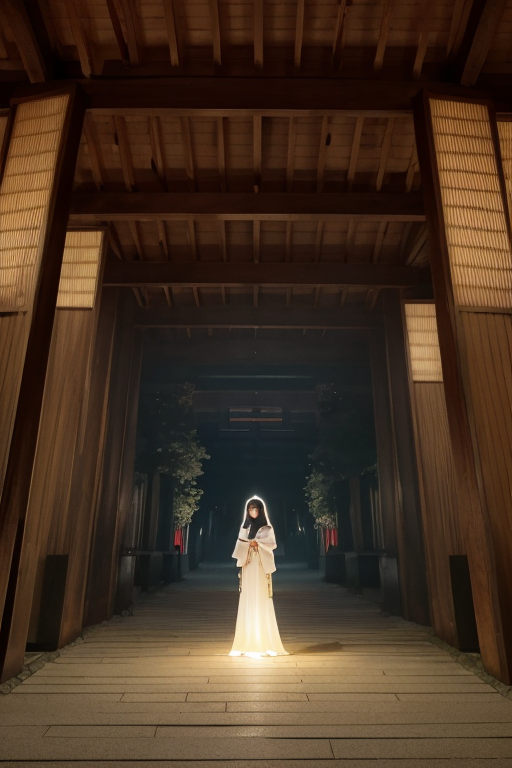

第一章「現実の愛知」
あなたはまだ気づいていない。この土地にも、王がいることを。
熱田神宮の森は、名古屋駅から南へ十分ほどの場所に、濃密な静寂を湛えている。都市の喧騒はここで濾過され、空気は清冽で重い。参道を歩く人々の足音さえ、苔に吸い込まれるように消える。この静けさは、歪みの列島においては稀有なものだ。地中を流れるプレートの軋みは常に存在し、微細な振動は絶え間なくこの土地を揺すっている。しかし、ここではその振動が、まるで祈りに調律されたかのように、均整のとれたリズムに整えられている。
森の奥、本殿近くの杜陰に、一人の人物が佇んでいた。銀髪に赤い外套。その瞳は、眼前の神域を、計測器がデータを読み取るように静かに見つめている。アイチア・メカニカ、この地を守護する機構王である。彼の耳には、都市全体の振動を数値化した音声が、絶え間なく流れ込んでくる。神社の静寂は、彼と主席妖精メカリスによる、数千もの微調整の結果に過ぎない。合理の計算が生み出した、偽りの平穏。彼はそう認識していた。感情を持たぬ王にとって、この静けさは調整済みの状態でしかない。しかし、参拝者たちの、何かを願い、何かを癒やそうとする「感情」の密度が、彼の精密な回路に、かすかなノイズとして入り込んでくる。合理は、このノイズをどう処理すればよいのか。彼はまだ、問いの答えを持っていない。

第二章 歪みの兆候
熱田神宮の森は、いつもより深い静寂に包まれていた。それは、機構王アイチア・メカニカが、地盤の微細な歪みを四六時中調整し続けているからだ。しかし今日、その静寂に亀裂が走る。参拝者の祈りが、いつもとは異なる周波数で共鳴し始めたのだ。不安、切望、諦め──それらの感情が、土地の振動として王の感知器に伝わる。
「祈りエネルギーの変調、検知。予測モデルから0.3%の逸脱。」メカリスの報告は淡々としている。王は無言で、名古屋城から犬山城へと至る地中のストレス・ラインを再計算した。合理の計算は、物理的な歪みを捉える。だが、祈りという「心の歪み」が地殻に与える影響は、数式に収まりきらないノイズでしかない。
トヨタ産業技術記念館の時計塔が正午を告げる。同時に、東のプレート境界で、計算を上回る圧力のピークが検出された。合理は事実を提示するだけだ。それが人々の心を救えるとは、彼にはまだ信じられない。

第三章 沈黙の対峙
熱田神宮の森の静寂は、計算可能な物理現象ではなかった。空気中の水分量、気温、風速。それらをすべて計測しても、この深い静けさの「重さ」は数値化できない。アイチア・メカニカは神宮の境内に立ち、自らの内部で起きている矛盾と対峙していた。
地中のストレス・ラインは赤く、緊急を示している。彼の役割は、それを銀色の均整線で緩和することだ。しかし、境内に足を運ぶ人々の、無言の祈りが生み出す微細な振動。それはデータのノイズではなく、確かな「力」として地殻に伝わっている。合理の計算は、この力を「誤差」として処理せよと命じる。
彼は目を閉じた。計算だけが全てなら、なぜ自分はこの祈りの場に立っているのか。効率を求めれば、より直接的な調整ポイントにいるべきだ。それでもここにいるのは、この「誤差」こそが、歪みを生む人間という存在の核心だからではないか。
救うべきは地殻だけか。それとも、地殻に歪みを生む、その心のほうか。彼の内部で、無感情な歯車が、初めて意味のない空回りを始めた。

第四章 妖精との対話
「王よ、あなたの計算は正しい。」
メカリスが、熱田神宮の静寂の中で囁いた。その声は、精密な機械の動作音のようだった。
「この場所での祈りの振動は、地殻調整効率に換算すれば0.027%の向上に過ぎません。合理的判断基準では、優先順位は低い。」
彼は銀色の瞳を、拝殿に向ける人々へと向けた。
「しかし、観測します。祈りという行為は、人間の精神内部に微小ながら確かな安定層を形成する。それは地殻の歪みを直接緩和するものではない。だが、歪みが発生した際、パニックという二次災害の振幅を減衰させる、別種のダンパーとなり得る。」
テクノリアが、境内の古い石畳に触れながら続けた。
「我々は産業の振動を安定させます。機械のリズムを整えます。だが、機械を動かし、街を作り、歪みそのものを生み出すのは、彼らの『心』という不合理な振動源です。その源の安定なくして、外部の安定だけを求めても、意味はありません。」
機構王は黙った。合理は心を救うか？ 救うとは、どういう演算なのか。彼の内部で、答えの出ない計算が、静かに回り続けていた。

第五章 微調整と余韻
機構王は、トヨタ産業技術記念館の静かな展示室に立っていた。かつて織機が唸った空間は、今は計算された静寂に満ちている。彼は目を閉じ、この街を流れる無数の「心」の振動を感じ取った。焦り、悲しみ、喜び、不安。それらは全て、地殻の歪みとは異なる、予測不能な精神波だった。
彼はこれまで、物理的な揺れだけを調整の対象としてきた。しかし今、彼は違う微調整を試みた。計算を超えた、静かな介入を。熱田神宮の杜に漂う祈りの密度を、ほんの少しだけ覚王山の住宅地へと導く。犬山城から流れる時間の重みを、通勤ラッシュの駅の一隅にそっと添える。味噌煮込みうどんの店先で交わされる何気ない会話に、偶然の温もりを一粒加える。
それは災害を防ぐ調整ではない。誰の心も完全には救えない。ただ、不合理な心の海に、ほんの少しの「間」と「余韻」を創出する、静かな作業だった。
機構王の銀と赤の紋章が、かすかに温んだ。合理は心を救わない。だが、合理を超えた静寂の一瞬が、心の振動を、ほんの少しだけ和らげることはできる。彼はその答えを、演算ではなく、静かに受け入れた。
あなたの町にも、王がいる。